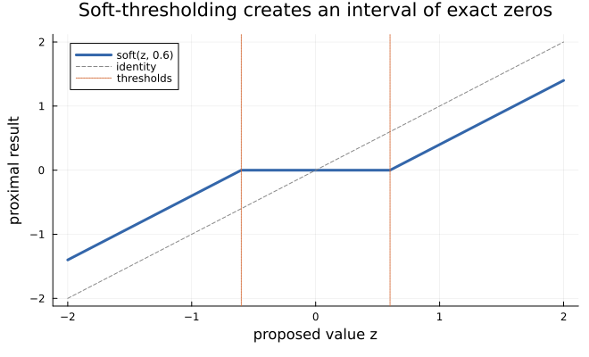

The proximal operator
Prerequisites: subgradients and the lasso KKT conditions.
After this chapter you can:
- Recognize a proximal update as a small optimization problem.
- Derive scalar soft-thresholding.
- Explain why a group penalty removes or retains a whole vector together.
Soft-thresholding and proximal operators
A proximal operator trades off staying near a proposed value and reducing a penalty. For L1, its scalar form is soft-thresholding:
\[\operatorname{soft}(z,t)=\operatorname{sign}(z)\max(|z|-t,0).\]
For example, soft-thresholding 0.3 at threshold 0.5 gives 0, while thresholding -0.9 gives -0.4. The exact zero is the key to lasso sparsity. ProximalBase provides the losses and penalties used here.
The small problem inside the large one
For a proper, closed, convex penalty g and a step gamma > 0, define
\[\operatorname{prox}_{\gamma g}(z) =\arg\min_\beta\left\{g(\beta)+\frac{1}{2\gamma}\|\beta-z\|_2^2\right\}.\]
The quadratic keeps the result near the proposed point z; g makes the result respect the desired penalty. The quadratic makes this minimization strongly convex, giving a unique minimizer. This definition and its basic properties are developed in Parikh and Boyd, Proximal Algorithms, Sections 1.1 and 2.
For one lasso coefficient, solve min_b lambda*abs(b) + (b-z)^2/(2gamma). At a positive minimizer the derivative is lambda + (b-z)/gamma, so b = z-gamma*lambda. That answer is positive exactly when z > gamma*lambda. At a negative minimizer the answer is b = z+gamma*lambda. At zero, the subgradient condition holds exactly when abs(z) <= gamma*lambda. Putting these cases together gives soft-thresholding.
Because both the squared distance and the L1 penalty separate over coordinates, the vector proximal operator applies this scalar rule to every entry. The threshold is the product gamma*lambda: the optimization step and the statistical penalty play different roles.
using Plots
soft(z, threshold) = sign(z) * max(abs(z) - threshold, 0.0)
z_grid = collect(range(-2.0, 2.0; length=401))
threshold = 0.6
soft_plot = plot(z_grid, soft.(z_grid, threshold);
label="soft(z, 0.6)", linewidth=3, color="#3366aa",
xlabel="proposed value z", ylabel="proximal result",
title="Soft-thresholding creates an interval of exact zeros", size=(660, 400))
plot!(soft_plot, z_grid, z_grid; label="identity", linestyle=:dash, color="#888888")
vline!(soft_plot, [-threshold, threshold]; label="thresholds", color="#d46b38",
linestyle=:dot)
savefig(soft_plot, "soft-threshold.svg")
@assert soft(0.3, 0.5) == 0.0
@assert isapprox(soft(-0.9, 0.5), -0.4)
This is different from clipping at a fixed magnitude. Large values move toward zero by the threshold, while small values become zero outright.
A group shrinks along its direction
For the group penalty lambda * norm(beta), rotational symmetry makes a nonzero proximal result parallel to z. Writing beta = a*z/norm(z) reduces the problem to minimizing lambda*a + (a-norm(z))^2/(2gamma) over a >= 0. Therefore
\[\operatorname{prox}_{\gamma\lambda\|\cdot\|_2}(z) =\begin{cases} 0,&\|z\|_2\le\gamma\lambda,\\ \left(1-\dfrac{\gamma\lambda}{\|z\|_2}\right)z,&\|z\|_2>\gamma\lambda. \end{cases}\]
The zero case avoids dividing by norm(z). This norm proximal map is also covered in Parikh and Boyd, Section 6.5.
using LinearAlgebra
function block_soft(z, threshold)
radius = norm(z)
radius <= threshold ? zeros(length(z)) : (1 - threshold / radius) .* z
end
@assert isapprox(block_soft([3.0, 4.0], 2.0), [1.8, 2.4])
@assert block_soft([0.3, 0.4], 0.6) == [0.0, 0.0]
(block_soft([3.0, 4.0], 2.0), block_soft([0.3, 0.4], 0.6))([1.7999999999999998, 2.4], [0.0, 0.0])Groups are useful when several coefficients represent one conceptual predictor, such as the basis functions for one nonlinear effect. See the sparse additive regression example. The package's group-coordinate step and its restrictions are specified in the group CD contract.
Exercises
- Compute
soft(-1.2, 0.3),soft(0.2, 0.3)andsoft(0.3, 0.3)by hand. - If
lambdastays fixed and the optimization stepgammais halved, what happens to the threshold? Has the statistical objective changed? - Coding: implement the three-case scalar formula and check it against
softon a grid. Use both formulas inside a one-step lasso update and compare a converged sequence of those updates withsolve!in the next chapter. - For a group
z = [3,4], find the smallest threshold that makes the group zero. How does entrywise soft-thresholding at that level differ?
Exercise answers
- The answers are
-0.9,0and0. - The threshold is halved. The objective is unchanged; only the optimization update changes.
- The formulas agree, including at the two thresholds. At threshold points, the value is zero. The comparison with
solve!must use the same loss scale and penalty. - The group threshold is
5. Entrywise thresholding at5is also zero, but at4entrywise thresholding is already zero while group thresholding returns[0.6,0.8]. The two penalties encode different structures.
Continue to proximal gradient descent.